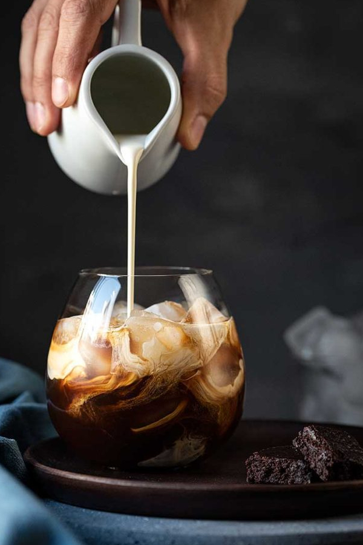

White Russian

Ingredientes:
45 ml de vodka
30 ml de licor de café (como Kahlúa)
30 ml de creme de leite
Gelo
Instruções:
Encha um copo baixo com gelo.
Adicione a vodka e o licor de café no copo.
Mexa suavemente para misturar os ingredientes.
Despeje o creme de leite cuidadosamente sobre a parte de trás de uma colher virada para cima, permitindo que ele se misture
lentamente com os outros ingredientes.
Deixe o creme de leite criar uma camada sobre a bebida.
Se desejar, mexa suavemente para incorporar o creme de leite à bebida.
Sirva imediatamente e aproveite o seu White Russian!
O White Russian é um coquetel cremoso e delicioso, perfeito para ser apreciado como sobremesa ou para desfrutar de um momento
de relaxamento. Se preferir um sabor mais suave, você pode ajustar as proporções dos ingredientes de acordo com seu gosto
pessoal. Aproveite o seu White Russian!